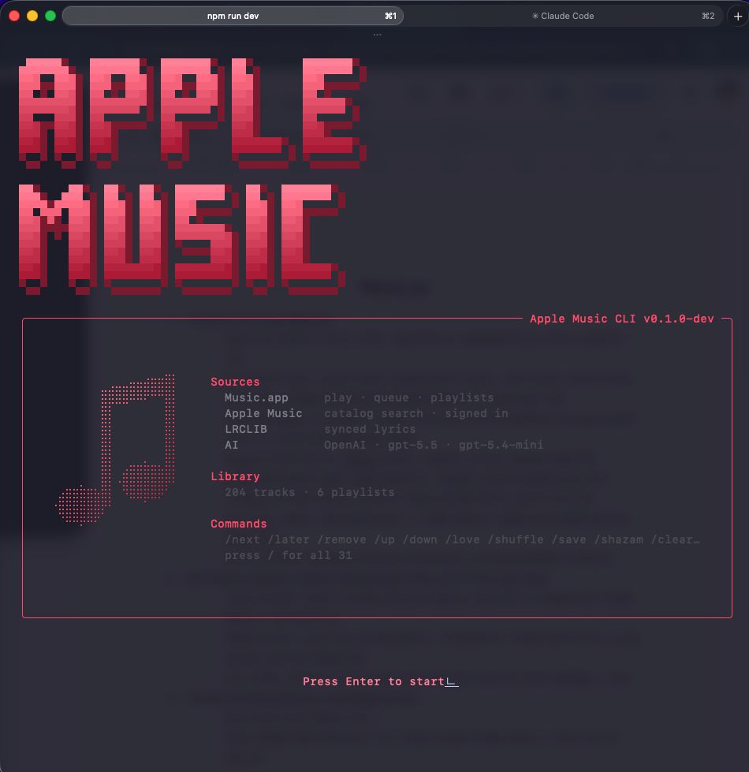
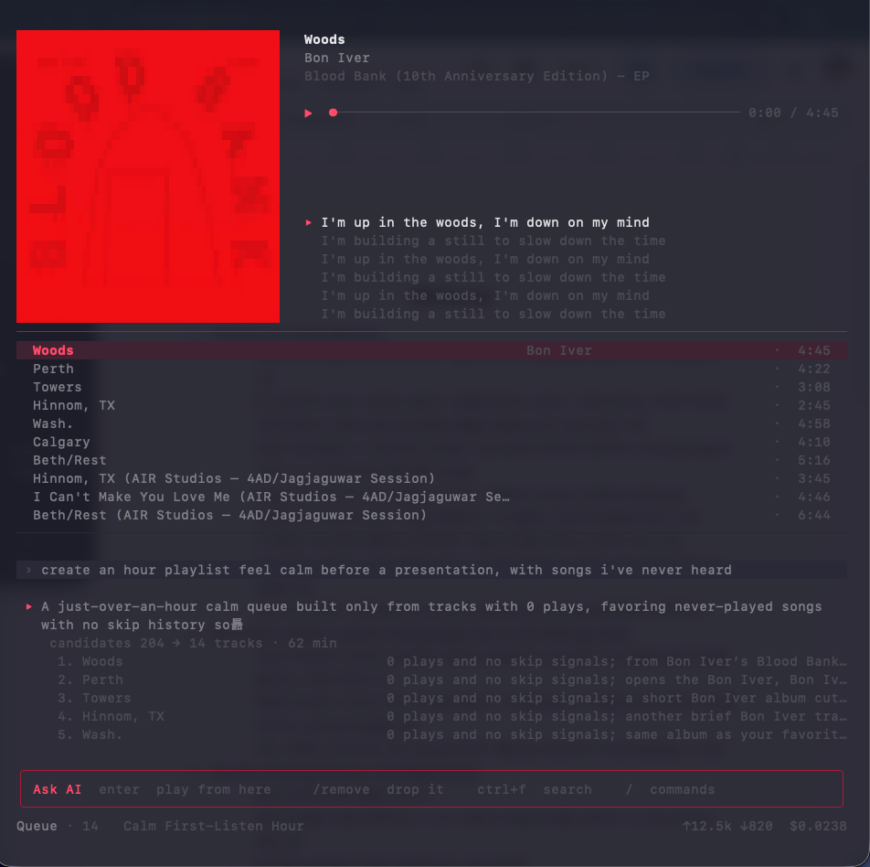
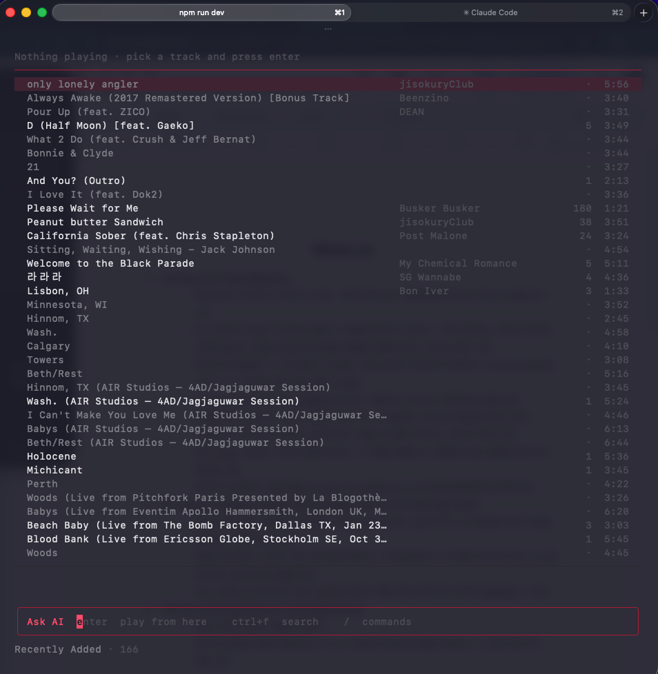
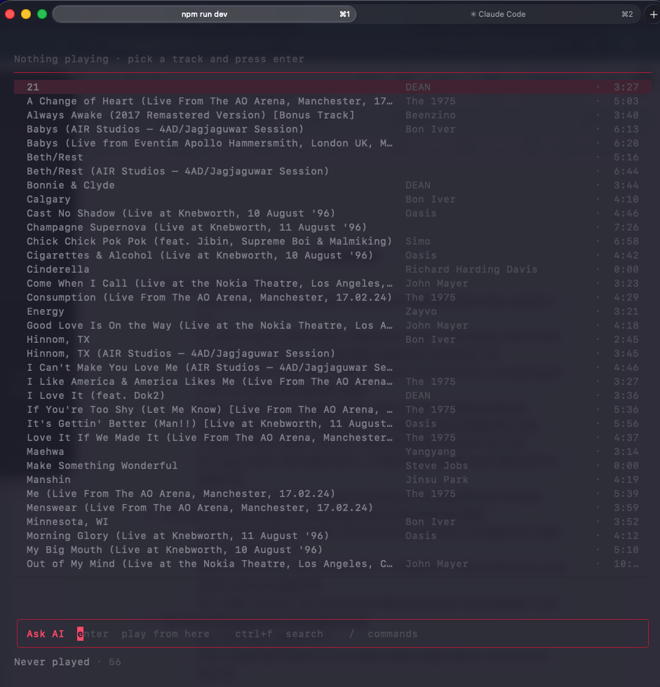
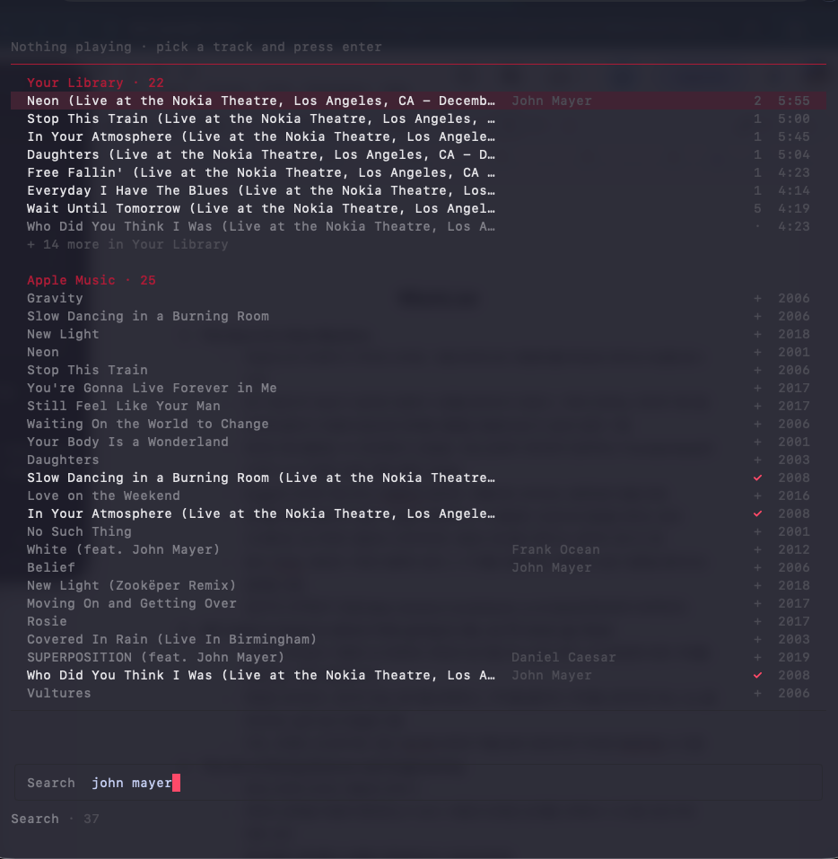
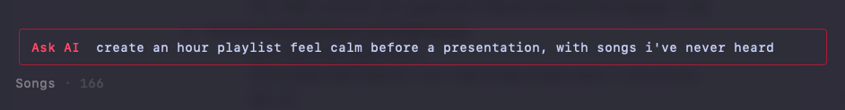
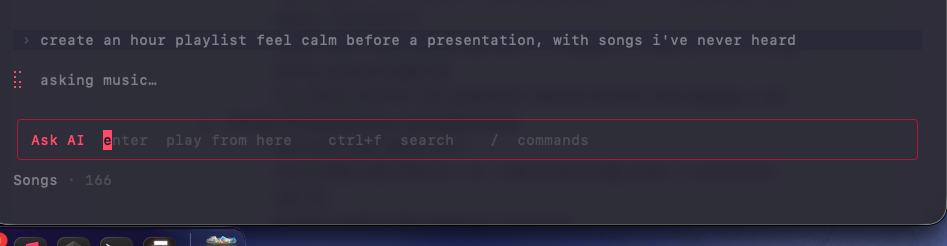
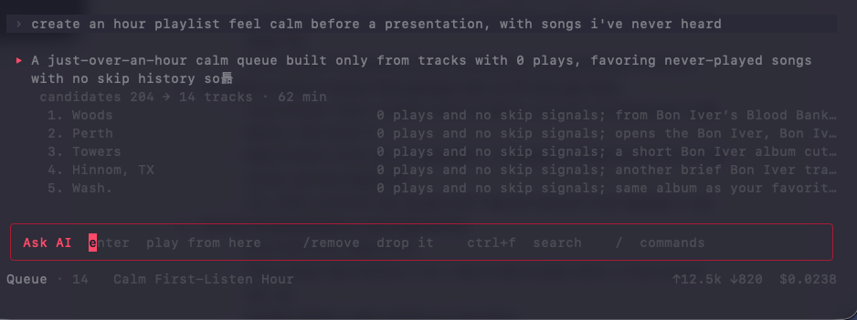
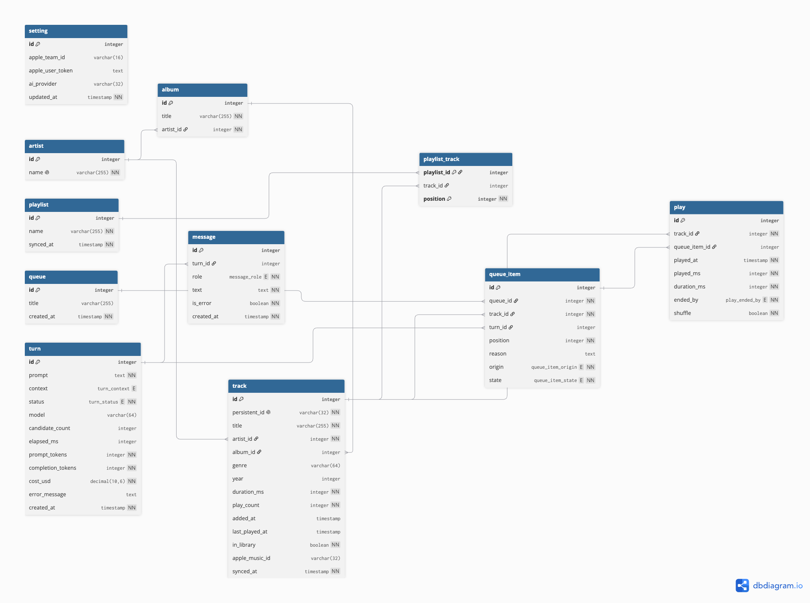

판교 3반 · 웹 서비스 프로젝트
Apple Music TUI
터미널에서 끝나는 음악 클라이언트 — 담아만 둔 곡을 다시 듣게 한다
- 작성자
- 정민교
- 제출일
- 2026. 09. 10.
- 산출물
- 기술서(PDF) · API 명세(YML) · DB 다이어그램(DBML)
목차
1. 서비스 개요3
2. 시스템 액터 정의4
3. UI 흐름 (와이어프레임)5
4. 데이터 모델 설계8
5. API 명세 정의9
6. 고려사항11
1. 서비스 개요
- 서비스명
- Apple Music TUI — 터미널에서 쓰는 음악 클라이언트
- 한 줄 정의
- 내가 이미 가진 음악을, 말로 부탁해서, 터미널을 떠나지 않고 듣는다
- 타겟 사용자
- 터미널에서 일하는 사람 — 하루의 대부분을 검은 창 안에서 보내는 개발자
- 형태
- macOS 로컬 데몬 + 터미널 클라이언트
문제 정의
배경 — 담는 비용이 0이 되었다
스트리밍이 소유를 대체했다. 마음에 들면 한 번 눌러 담는다. 돈도 저장 공간도 들지 않으므로
담는 데 망설일 이유가 없어졌고, 라이브러리는 계속 커진다.
현황 — 듣는 쪽은 그만큼 늘지 않았다
실제 라이브러리를 측정한 결과다.
98%스트리밍으로 담은 곡
33.7%한 번도 재생하지 않은 곡
71%상위 10%가 차지한 재생
라이브러리에 담긴 166곡 중 56곡이 한 번도 재생되지 않았고, 실제로 듣는 것은 16곡이 전부다.
담는 일과 고르는 일 사이가 벌어졌다.
원인 — 도구가 담는 쪽만 싸게 만들었다
고르려면 담은 순서로 나열된 목록을 눈으로 훑어야 한다.
“안 들은 것만”, “이런 분위기로” 같은 질문을 던질 방법이 없다.
고르는 비용이 담는 비용보다 훨씬 비싼데 아무도 그것을 줄여주지 않았다.
여기에 하나가 더 겹친다. 터미널에서 일하는 사람은 곡 하나 바꾸려고 창을 떠나야 한다.
돌아오면 하던 일의 맥락이 끊겨 있다.
해결 — 핵심 가치와 주요 기능
| 핵심 가치 | 주요 기능 |
|---|
| ① | 안 들은 곡을 보이게 | 담은 뒤 한 번도 재생하지 않은 곡을 한 구역으로 분리한다 |
| ② | 듣는 중에 알려주기 | 재생 화면이 그 곡의 이력을 함께 말한다 — never played |
| ③ | 고르는 일을 대신 | 말로 부탁하면 큐를 짜고, 곡마다 왜 골랐는지 함께 말한다 |
| ④ | 터미널 안에서 완결 | 둘러보기 · 재생 · 큐 편집 · 가사 · 검색 · 플레이리스트 저장 |
③ 의 “왜 골랐는지”가 이 서비스의 성격을 정한다. 추천은 결과만 주지만,
이 서비스는 근거를 함께 준다 — 사용자가 그 판단을 받아들일지 말지 정할 수 있어야 하기 때문이다.
2. 시스템 액터 정의
| 액터 | 누구인가 | 접근 방법 |
|---|
| A. 청취자 | 지금 듣고 있는 사람 | 터미널 클라이언트 |
| B. 라이브러리 관리자 | 라이브러리를 손보는 사람 | 터미널 클라이언트 |
| C. 로컬 서버 | 권한과 열쇠를 쥔 쪽 | — |
| D. 외부 시스템 | Music.app · Apple Music · LRCLIB · AI 모델 | 서버가 호출 |
A 와 B 는 대개 같은 사람이다. 하는 일과 시점이 달라 나눈다 —
듣는 동안에는 판단을 미루고, 다 듣고 나서 라이브러리를 손본다.
A. 청취자
| # | 기능 | 화면 | 가치 |
|---|
| A1 | 자연어로 재생 큐를 요청한다 | 대화 띠 · Queue | ③ |
| A2 | 곡별 선정 근거를 확인한다 | 대화 띠 | ③ |
| A3 | 재생을 제어한다 — 재생·정지·이전·다음 | 지금 재생 | ④ |
| A4 | 섞기·반복·볼륨·좋아요를 바꾼다 | 지금 재생 | ④ |
| A5 | 가사를 재생 위치에 맞춰 본다 | 지금 재생 | ④ |
| A6 | 곡의 이력을 본다 — 마지막 재생일 · 재생 횟수 | 지금 재생 | ② |
| A7 | 큐를 편집한다 — 넣기·빼기·순서 바꾸기 | Queue | ④ |
| A8 | 마음에 든 큐를 플레이리스트로 저장한다 | Queue | ④ |
| A9 | 진행 중인 요청을 취소한다 | 대화 띠 | ③ |
B. 라이브러리 관리자
| # | 기능 | 화면 | 가치 |
|---|
| B1 | 라이브러리를 둘러본다 — 최근·아티스트·앨범·곡·플레이리스트 | 목록 | ④ |
| B2 | 제목·아티스트로 즉시 거른다 | 목록 | ④ |
| B3 | 한 번도 안 튼 곡을 훑는다 | Never played | ① |
| B4 | 그중 하나를 되살린다 — 재생하거나 큐에 넣는다 | Never played | ① |
| B5 | 카탈로그에서 곡을 찾는다 | Apple Music | ③ |
| B6 | 찾은 곡을 라이브러리에 담는다 | Apple Music | ③ |
| B7 | 라이브러리를 다시 읽는다 | 홈 · 상태줄 | ④ |
C. 로컬 서버
- Music.app 제어 권한을 단독으로 쥔다
- Apple Music 토큰과 AI 키를 보관한다
- 라이브러리 스냅샷을 저장한다
- 자연어 요청을 비동기로 처리한다
D. 외부 시스템
| Music.app | 라이브러리 · 재생 |
| Apple Music | 카탈로그 검색 |
| LRCLIB | 가사 |
| AI 모델 | 선곡과 근거 |
3. UI 흐름 (와이어프레임)
3-1. 화면은 하나다
일반적인 서비스는 로그인 → 목록 → 상세로 페이지가 이동한다. 이 서비스는 이동하지 않는다.
화면은 하나이고, 그 안의 목록 패널이 무엇을 담을지만 바뀐다.
재생은 어느 화면에 있든 끊기면 안 되는 유일한 것이다. 그래서 그것을 늘 같은 자리에 두고 나머지를 바꾼다.
┌────────────────────────────────────────────────┐
│ ① 지금 재생 커버 · 제목 · 진행바 · 가사 │ ← 늘 같은 자리
│ ───────────────────────────────────────────────│
│ │
│ ② 목록 패널 │ ← 여기만 갈아끼워진다
│ Recent / Artists / Albums / Songs / │
│ Playlists / Queue / Never played / Apple Music │
│ │
│ ───────────────────────────────────────────────│
│ ③ 대화 띠 내 말 · 답 · 곡별 근거 · 비용 │ ← 물어봤을 때만
│ ④ 입력창 [ 여기에 친다 ] │ ← 늘 같은 자리
│ ⑤ 팔레트 / 를 치면 펼쳐진다 │ ← 눌렀을 때만
│ ⑥ 상태줄 지금 어디 · 큐 N · 토큰 · 비용 │ ← 늘 같은 자리
└────────────────────────────────────────────────┘
3-2. 사용자 흐름
┌──────────┐
실행 ───────▶ │ 홈 (W1) │
└────┬─────┘
│ enter
▼
┌──────────────────────────────────────────────┐
│ 메인 (W2 ~ W5) │
│ │
│ tab 다음 구역으로 순환 │
│ / 먼 구역으로 곧장 · 명령 팔레트 │
│ ↑ ↓ 목록 이동 │
│ enter 고른 것 재생 · 묶음이면 파고들기 │
│ shift+↓ 재생 / 일시정지 │
│ 문장 입력 AI 에게 큐 요청 (비동기) │
│ shift+tab 입력 모드 왕복 — 묻기 ↔ 찾기 │
└───────────────┬──────────────────────────────┘
│ esc — 한 단계씩 물러난다
▼
요청 취소 → 파고들기 해제 → 홈 → 종료
esc 는 사슬이다. 물러날 곳이 있으면 거기까지만 가고, 없으면 다음 칸으로 넘어간다.
새로 배울 키가 없다.
3-3. 화면 목록
| # | 화면 | 보여주는 것 | 기능 |
|---|
| W1 | 홈 | 무엇에 붙어 있고 무엇이 막혀 있는가 | 진입 |
| W2 | 메인 — 지금 재생 · Queue | 커버 · 진행바 · 가사 · 다음에 틀 곡 | A2~A8 |
| W3 | 메인 — Recently Added | 최근 담은 곡 | B1 |
| W4 | 메인 — Never played | 한 번도 안 튼 곡 | B3·B4 |
| W5 | 검색 | 내 라이브러리와 Apple Music 을 한 화면에 | B2·B5·B6 |
| W6 | 요청 — 입력 | 자연어로 부탁하는 순간 | A1 |
| W7 | 요청 — 처리 중 | 답이 앉을 자리에 스피너가 앉는다 | A1 |
| W8 | 요청 — 답과 근거 | 후보 수 · 곡별 선정 근거 · 비용 | A2 |
예외는 별도 화면이 아니다. 화면이 하나이므로 오류도 같은 자리에서 말한다 —
관문은 지금 재생 자리에, 실패는 대화 띠에, 진행 상태는 상태줄에. 3-5 에 전수했다.
3. UI 흐름 — 화면

W1. 홈 — 무엇에 붙어 있고 무엇을 갖고 있는가. enter 로 들어간다

W2. 지금 재생 · Queue — 커버 · 진행바 · 가사, 그 아래 큐, 그 아래 대화

W3. Recently Added — 제목 · 아티스트 · 재생 횟수 · 길이

W4. Never played · 56 — 담긴 뒤 한 번도 재생되지 않은 곡
W2 한 장에 이 서비스의 네 가지 가치가 모두 들어 있다 —
가사가 붙은 재생(④), 안 들은 곡으로 짜인 큐(①), 곡별 근거(③), 그리고 쓴 돈(⑦).
3. UI 흐름 — 검색과 요청

W5. 검색 — 위는 Your Library · 22, 아래는 Apple Music · 25.
내 것과 카탈로그를 한 화면에서 본다. ✓ 는 이미 가진 곡, + 는 담을 수 있는 곡
요청 한 건의 흐름
선곡은 초 단위가 걸린다. 그래서 요청을 접수만 하고 화면을 놓아준다.

W6. 자연어로 부탁한다 — “한 시간짜리, 발표 전에 차분해지는, 한 번도 안 들어본 곡으로”

W7. 내 말이 대화 띠에 남고, 답이 앉을 자리에 스피너가 앉는다. 입력창은 계속 쓸 수 있다

W8. 후보 204곡에서 14곡 · 62분. 곡마다 왜 골랐는지 함께 온다 —
“0 plays and no skip signals”. 오른쪽 끝에 이번에 쓴 돈이 남는다
3. UI 흐름 — 구성 요소와 예외
3-4. 화면 구성 요소
| 영역 | 보이는 값 |
|---|
| 지금 재생 | 앨범 커버 · 제목 · 아티스트 · 앨범 · 진행바 · 재생 위치 / 길이 · 가사 |
| 지금 재생 (가사 없을 때) | 장르 · 발매연도 · 추가일 · 마지막 재생일 · 재생 횟수 · never played |
| 목록 — 곡 행 | 제목 · 아티스트 · 재생 횟수 · 길이 |
| 목록 — 묶음 행 | 아티스트명 / 앨범명 · 곡 수 · 누적 재생 수 |
| 목록 — Queue | 순번 · 선정 근거 · 넣은 주체 · 항목 상태 |
| 목록 — Apple Music | 제목 · 아티스트 · 보유 표시 |
| 대화 띠 | 내가 한 말 · 답 · 곡별 근거 · 모델 · 소요 시간 · 토큰 · 비용 |
| 입력창 | 지금 모드(묻기 / 찾기) · 지금 고른 것으로 할 수 있는 일 |
| 상태줄 | 지금 구역 · 항목 수 · 섞기·반복 · 큐 개수 · 누적 토큰 · 비용 |
반응형. 창이 좁아지면 칸이 순서대로 사라진다 — 재생 횟수 → 아티스트 → 길이.
제목은 버리지 않는다. 세로가 짧으면 앨범 커버 대신 한 줄짜리 재생 바가 된다.
3-5. 예외 · 오류 시나리오
| 상황 | 화면이 하는 말 | 사용자가 할 것 |
|---|
| 자동화 권한 거부 | PERMISSION Music 을 제어할 권한이 필요합니다 | ctrl+g 시스템 설정 |
| Music.app 미실행 | MUSIC APP Music 이 실행되어 있지 않습니다 | open -a Music |
| AI 꺼짐 | AI is off | /ai <key> |
| 카탈로그 미설정 | 구역 자체가 생기지 않는다 | /setup <team ID> |
| 가사 없음 | 그 자리에 곡 이력을 대신 그린다 | 없음 — 정상이다 |
| 동기화 진행 중 | 상태줄에 ⟳ syncing | 기다린다 |
| 선곡 실패 | 대화 띠에 실패 문장이 남는다 | 다시 물어본다 |
| 조건에 맞는 곡 없음 | “조건에 맞는 곡이 없습니다” | 조건을 넓힌다 |
원칙 — 화면은 “왜 안 되는지”가 아니라 “무엇을 하면 되는지”를 말한다
그래서 모든 오류 응답이 message 와 함께 hint 를 갖는다.
실패해도 재생은 멈추지 않는다 — AI 가 근거를 못 만들어도 큐는 그대로 돈다.
3-6. 비동기 요청의 화면 처리
문장을 친다 ──▶ 요청 접수 (즉시 응답)
│ 대화 띠에 내 말이 뜨고, 답이 앉을 자리에 스피너가 앉는다
▼
진행 상태를 되묻는다
│
┌─────────────┼──────────────┬───────────────┐
▼ ▼ ▼ ▼
완료 실패 취소(esc) 계속 대기
답·근거·비용 실패 문장 요청을 물린다 스피너 유지
큐 갱신 재생은 계속
4. 데이터 모델 설계
화면에 보이는 값을 먼저 전부 적고, 그중 저장해야 하는 것만 컬럼으로 만들었다.
반대 순서로 하면 화면에 있는 데이터가 모델에 없는 일이 생긴다.
| 분류 | 예 | 컬럼이 되는가 |
|---|
| 저장 | 곡 제목 · 재생 횟수 · 마지막 재생일 | 된다 |
| 실시간 | 재생 위치 · 앨범 커버 · 섞기 상태 | 안 된다 — 그때그때 묻는다 |
| 계산 | 진행바 · “3년 전” · 누적 비용 | 안 된다 — 다른 값으로 만든다 |

개체 관계도 (ERD) — 전체 정의는 -DB.dbml
엔티티
| # | 개체 | 무엇인가 | 화면 |
|---|
| 1 | artist | 아티스트 | W3 · 곡 행 |
| 2 | album | 앨범 | W2 지금 재생 |
| 3 | track | 곡 — 가장 많이 읽히는 개체 | W2~W5 |
| 4 | playlist | 플레이리스트 | 목록 |
| 5 | playlist_track | 플레이리스트에 담긴 곡과 순서 | 목록 |
| 6 | queue | 재생 큐 | W2 |
| 7 | queue_item | 큐에 담긴 곡 · 선정 근거 | W2 · W8 |
| 8 | turn | 자연어 요청 한 건 — 문장 원본 · 어떤 자리를 위한 것인가 · 토큰 · 비용 | W6~W8 · 상태줄 |
| 9 | message | 대화 띠의 한 줄 | 대화 띠 |
| 10 | play | 곡이 끝난 사건 — 왜 끝났나 | 없음 |
| 11 | setting | 이 기기의 설정 (한 행) | W1 |
관계
| 관계 | 종류 | 설명 |
|---|
artist → album | 1 : N | 한 아티스트가 여러 앨범 |
artist → track | 1 : N | 앨범 없는 싱글도 아티스트는 있다 |
album → track | 1 : N | FK 는 NULL 허용 — 앨범 없는 곡이 있다 |
playlist ↔ track | M : N | playlist_track 이 푼다. 순서가 있어 복합 PK |
queue → queue_item | 1 : N | |
turn → queue_item | 1 : N | FK 는 NULL 허용 — 사람이 넣은 곡은 비어 있다 |
turn → message | 1 : N | |
track → play | 1 : N | 같은 곡을 여러 번 듣는다 |
play → queue_item → turn | 사슬 | “이 곡을 언제 넘겼나”가 여기서 풀린다. 사건마다 맥락을 복사하지 않는다 |
이 서비스의 문제가 데이터에서는 한 컬럼의 NULL 이다
play_count = 0 AND last_played_at IS NULL — 담아두고 한 번도 재생하지 않은 곡.
Never played 화면(W4) 전체가 이 조건이고, 재생 화면(W2)의 never played 경고도 같은 조건이다.
두 컬럼이 화면 두 곳을 지탱한다.
둘 다 보는 이유 — Music.app 이 재생 횟수와 마지막 재생일을 따로 관리해서,
한쪽만 채워진 곡이 실제로 존재한다(실측 1곡). 한쪽만 보면 그 곡을 잘못 센다.
저장하는 유일한 해석 — turn.context
요청이 어떤 자리를 위한 것인가를 여덟 중 하나로 받는다 —
focus · workout · chores · commute ·
social · unwind · sleep · other.
축은 하나다(무엇을 하는 중인가). “틀어만 둔다” 같은 주의의 정도는 다른 축이라 넣지 않는다 —
섞으면 값이 겹쳐 같은 사건이 두 칸에 갈라진다.
판단을 저장하지 않는다는 원칙의 예외로 보이지만,
원문(prompt)이 그대로 남으므로 되돌릴 수 있다 — 분류가 틀렸다고 판단되면 지난 것을 다시 나누면 된다.
되돌릴 수 있는 해석만 저장한다.
5. API 명세 정의
전체 명세는 -API.yml(OpenAPI 3.0.3) 에 있고, 여기에는 목록을 싣는다.
28경로
34오퍼레이션
151공통 스키마 재사용
설계 원칙
| ① | 자연어 요청은 비동기다. 요청은 즉시 접수만 하고, 화면이 진행을 되묻는다. 선곡이 초 단위이므로 기다리게 하면 입력창이 죽는다. |
| ② | 실시간 값은 저장하지 않는다. 재생 위치·섞기·반복은 그때그때 물어 돌려준다. 사용자가 밖에서 바꿀 수 있기 때문이다. |
| ③ | 관문은 로그인이 아니라 권한이다. 그래서 401 이 없다. |
| ④ | 실패가 재생을 막지 않는다. 선곡 실패는 요청의 상태로 전달되고 큐는 그대로 돈다. |
엔드포인트
| 엔드포인트 | 하는 일 | 화면 |
|---|
| 상태 · 설정 |
|---|
GET /status | 무엇에 붙어 있고 무엇을 갖고 있는가 | W1 |
GET · PATCH /settings | 설정 조회 · 변경 | W1 |
| 라이브러리 |
|---|
GET · POST /library/sync | 동기화 상태 · 다시 읽기 | W1 |
GET /tracks | 곡 목록 — 정렬·필터·검색 | W3·W4·W5 |
GET /tracks/{id} | 곡 하나 | — |
GET /artists · /{id}/tracks | 아티스트 묶음 · 파고들기 | W3 |
GET /albums · /{id}/tracks | 앨범 묶음 · 파고들기 | W3 |
GET /playlists · /{id}/tracks | 플레이리스트와 담긴 곡 | 목록 |
POST /playlists | 지금 큐를 플레이리스트로 저장 | W2 |
| 카탈로그 |
|---|
GET /catalog/tracks | 카탈로그 검색 | W5 |
POST /library/tracks | 찾은 곡을 라이브러리에 담기 | W5 |
| 재생 |
|---|
GET · PATCH /playback | 지금 재생 중인 것 · 섞기·반복·볼륨 | W2 |
POST /playback/play · pause · next | 재생 제어 | W2 |
GET /playback/artwork | 앨범 커버 | W2 |
GET /playback/lyrics | 가사 | W2 |
| 큐 |
|---|
GET · DELETE /queue | 지금 큐 · 비우기 | W2 |
POST /queue/items | 큐에 곡 넣기 | W2 |
PATCH · DELETE /queue/items/{id} | 순서 바꾸기 · 빼기 | W2 |
| 대화 |
|---|
POST /turns | 자연어 요청 접수 | W6 |
GET /turns/{id} | 진행과 결과 — 근거 · 토큰 · 비용 | W7·W8 |
POST /turns/{id}/cancel | 진행 중인 요청 물리기 | W7 |
GET /turns/usage | 누적 토큰과 비용 | 상태줄 |
GET /messages | 대화 띠에 그릴 줄들 | 대화 띠 |
| 기록 |
|---|
POST /plays | 곡이 끝났다 — 왜 끝났는지와 함께 | 없음 |
5. API — 예외 처리
3-5 의 예외 시나리오와 하나씩 대응한다.
| HTTP | 코드 | 화면이 하는 말 |
|---|
| 400 | VALIDATION_FAILED | 요청 형식이 잘못되었다 |
| 403 | AUTOMATION_PERMISSION_DENIED | Music 을 제어할 권한이 필요합니다 |
| 404 | NOT_FOUND | 대상을 찾을 수 없다 |
| 404 | LYRICS_NOT_FOUND | 가사를 찾지 못했습니다 |
| 409 | SYNC_IN_PROGRESS | 이미 읽는 중입니다 |
| 409 | AI_NOT_CONFIGURED | AI is off |
| 409 | CATALOG_NOT_CONFIGURED | 카탈로그 설정이 필요합니다 |
| 409 | TURN_ALREADY_RUNNING | 이미 진행 중인 요청이 있습니다 |
| 409 | TRACK_NOT_AVAILABLE | 이 곡은 지금 틀 수 없습니다 |
| 502 | CATALOG_UNAVAILABLE | 카탈로그에 닿지 못했습니다 |
| 502 | MODEL_UNAVAILABLE | 모델이 답하지 않습니다 |
| 503 | MUSIC_APP_NOT_RUNNING | Music 이 실행되어 있지 않습니다 |
| — | NO_MATCHING_TRACKS | 조건에 맞는 곡이 없습니다 (요청의 상태로 전달) |
공통 응답 형식
모든 오류가 같은 모양으로 온다. 여섯 개의 공통 응답을 정의하고 재사용한다.
| 필드 | 내용 |
|---|
code | 위 13종 중 하나 |
message | 화면에 그대로 띄울 수 있는 문장 |
hint | 무엇을 하면 되는지. 예 — open -a Music |
목록 응답
라이브러리는 수천 곡이 될 수 있으므로 커서 기반으로 나눠 준다.
목록 응답은 전부 { items, meta } 모양이며 meta 는 hasMore 와 nextCursor 를 갖는다.
화면 ↔ 데이터 ↔ API 정합성
| 확인한 것 | 결과 |
|---|
| 화면의 모든 값이 부를 API 를 갖는가 | ✔ |
| 화면의 모든 저장 값이 컬럼을 갖는가 | ✔ |
| 모든 개체(11)를 쓰는 API 가 있는가 | ✔ |
| 모든 API(34)를 부르는 화면이 있는가 | ✔ 1건 예외 |
| 실시간·계산 값이 컬럼으로 새어 들어갔는가 | 없음 |
예외 1건 — POST /plays. 화면에 없지만 다음 선곡이 읽는다. 6장에서 설명한다.
6. 고려사항
6-1. 범위를 어디서 끊었는가
기능을 더 넣는 것보다 넣지 않기로 한 것을 정하는 쪽이 어려웠다.
| 뺀 것 | 이유 |
|---|
| 취향 규칙 자동 도출 | “이 사람은 잔잔한 걸 좋아한다” 같은 판정을 저장하려면 기준이 필요한데, 그 기준이 맞는지 확인할 데이터가 아직 없다. 대신 판정 이전의 사실만 모은다 |
| 사용자 계정 · 로그인 | 로그인 화면이 없다. 한 사람의 기기에서 도는 로컬 서비스이므로 구분할 대상이 없다 |
| 다기기 동기화 | 위와 같은 이유. 필요해지는 시점은 6-4 에 적었다 |
6-2. 저장할 것과 물어볼 것을 나눈 기준
저장하면 어긋난다. 사용자는 이 서비스를 보면서도 Music.app 을 직접 열어 조작할 수 있고,
그 순간 우리가 기억한 값은 거짓말이 된다. 어긋난 값은 없는 값보다 나쁘다 —
없으면 다시 물어보면 되지만, 틀린 값은 틀린 줄 모른다.
| 종류 | 예 | 처리 |
|---|
| 밖에서 바뀔 수 있는 것 | 재생 위치 · 섞기 · 볼륨 | 매번 묻는다 |
| 밖에서 안 바뀌는 것 | 우리가 만든 큐 · 선정 근거 · 대화 | 저장한다 |
| 다른 값으로 만들 수 있는 것 | 진행바 · 누적 비용 · 항목 수 | 계산한다 |
치르는 비용 — 주기적으로 상태를 되묻는 왕복이 생긴다. 그 대신 화면이 옛말을 하지 않는다.
6-3. 화면이 없는 데이터를 왜 모으는가
Music.app 은 무슨 일이 있었는지만 센다. 넘긴 횟수는 알려주지만 왜 넘겼는지는 모른다.
사람이 넘긴 것, 큐에서 뺀 것, 큐를 갈아끼운 것, 끝까지 들은 것이 한 숫자에 뒤섞여 있다.
그래서 우리만 아는 것을 따로 적는다.
해석은 적지 않는다. “일찍 나감”의 기준이 3초인지 5%인지 아직 모르는데
판정을 저장하면, 기준을 바꿀 때 지난 것을 다시 계산할 수 없다.
지금은 이 기록이 다음 선곡의 재료로 쓰인다 — 최근에 넘긴 곡을 후보에서 덜어낸다.
6-4. 다음 단계에서 다시 봐야 할 것
| # | 지금 | 언제 바꿔야 하나 |
|---|
| 1 | 사용자 개체가 없다 | 다기기 동기화를 넣는 순간. user 를 만들고 소유 관계를 단다 |
| 2 | 인증이 없다 | 이 기기 밖으로 여는 순간. 로컬인 동안에는 필요 없다 |
| 3 | 큐가 한 번에 하나다 | 여러 큐를 동시에 두려면 활성 표시가 필요하다 |
| 4 | 대화가 무한히 쌓인다 | 보관 기간 정책이 필요하다 |
| 5 | 주기적으로 되묻는다 | 이벤트를 밀어 주는 통로로 바꾸면 왕복이 준다 |
| 6 | 라이브러리를 통째로 다시 읽는다 | 수천 곡대에서 느리다. 변경분만 읽어야 한다 |
| 7 | AI 비용이 사용자 부담이다 | 그래서 화면이 쓴 돈을 상시로 보여준다. 정책이 바뀌면 이 자리도 바뀐다 |
| 8 | 선곡이 곡 단위로만 배운다 | “여러 번 일찍 나간 곡은 뺀다”까지가 지금이다. “공부할 때만 이 곡을 뺀다”는 아직 못 한다 — 맥락별로 세려면 표본이 필요하고, 지금은 그 재료(turn.context)를 모으는 중이다 |
6-5. 이름에 대하여
Apple Music 은 Apple 의 상표다. 이 문서에서는 대상을 분명히 하기 위해 그대로 쓰지만,
실제 서비스로 낸다면 고유한 이름을 두고 “Apple Music 을 제어한다”를 부제로 두는 것이 맞다.
Music.app 을 제어하는 것 자체는 macOS 가 공식적으로 여는 길이므로 문제가 없다. 이름만 문제다.